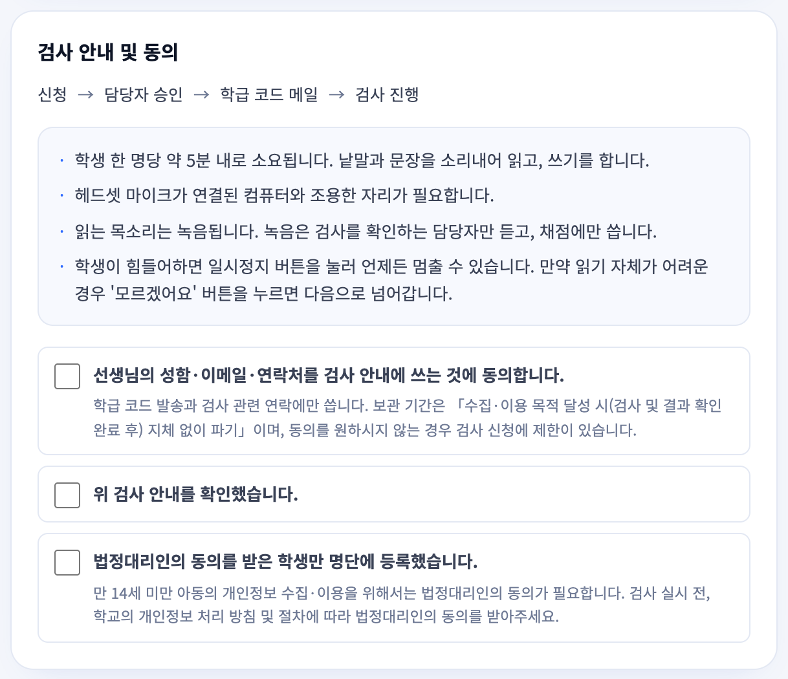
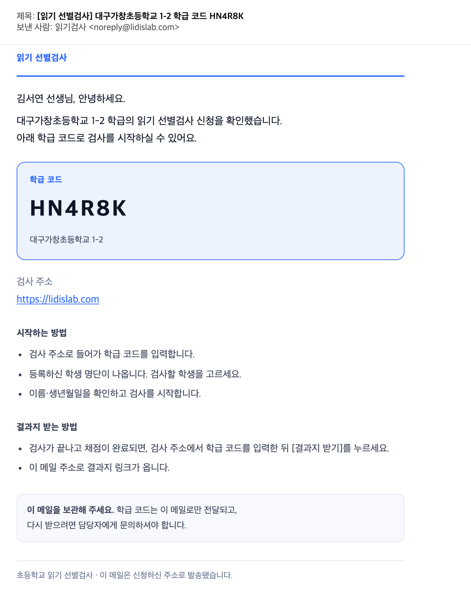
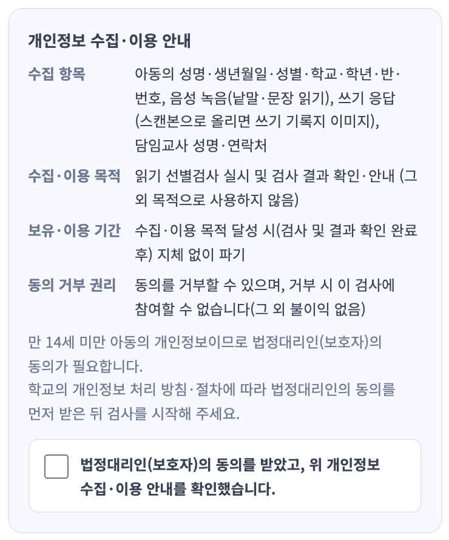
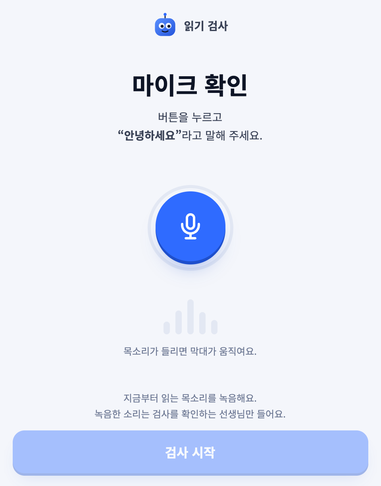
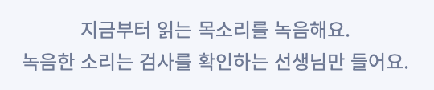

읽기 선별검사
검사 앱(https://lidislab.com)은 지금 바로 쓸 수 있는 상태예요. 다만 아래 항목은 담당자님이 정해 주셔야 앱에 반영할 수 있어요. 항목마다 지금 앱이 어떻게 되어 있는지와 무엇이 필요한지를 나눠 적었어요.
오프라인으로 쓰기 검사를 할 때 쓰는 기록지 양식 파일을 보내 주세요.
아래 문구를 그대로 써도 되는지 확인해 주세요. 고칠 곳이 있으면 표시해 주세요.
그림 1에서 칠하지 않은 문구는 이미 확인해 주신 거라 보지 않으셔도 돼요.




아래쪽 두 줄 확대

연습 문항이 "쉬운 실제 낱말"이 맞는지, 아니면 "무의미 낱말(가보·나로 같은)"이어야 하는지 확인해 주세요.
무의미 낱말이라면 연습에서 미리 경험하는 것이 본 검사에 영향을 줄 수 있어서 문항을 어떻게 고를지도 함께 알려 주세요.
지역 / 학교 표기 방식이 맞는지 확인해 주세요. (학기 구분 3~8월 1학기 · 9~2월 2학기는 확인해 주셨어요.)
지역 / 학교
예시로 주신 「춘천 교동초등학교」와 같은 모양으로 맞췄어요.
| 경우 | 표기 | 예 |
|---|---|---|
| 도 지역 학교 | 시·군 이름(「시」「군」 없이) + 학교명 | 춘천 교동초등학교 |
| 특별시·광역시·세종 학교 | 도시 이름 + 학교명 | 부산 운산초등학교 |
| 학교 이름이 지역 이름으로 시작 | 지역을 겹쳐 쓰지 않음 | 대구성지초등학교 |
| 도의 시 이름이 광역시 이름과 같음 | 도 이름을 앞에 붙임 | 경기 광주 ○○초등학교 |
| 위 규칙으로도 다른 학교와 표기가 같아짐 (전국 3쌍) | 도는 도 이름, 광역시는 구 이름을 더 붙임 | 강원 고성 동광초등학교 부산 해운대구 송정초등학교 |